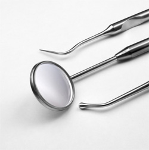
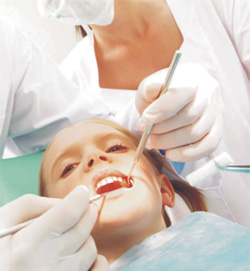
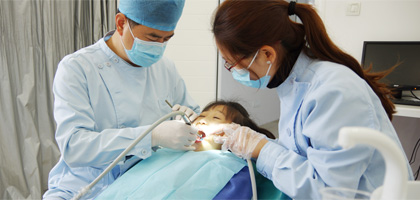

窝沟封闭：儿童牙齿保护罩
小朋友想起去医院看牙，你一定会感到心里不安，甚至恐惧。现在不用怕了，有一种技术可以使你的牙齿避免龋坏，这种技术叫做窝沟封闭。窝沟封闭是世界卫生组织向全世界儿童推荐的一种保护新生恒牙的方法，
我国牙防组织也向全国的小朋友推荐了这种保护牙的新方法。
儿童新生恒牙(后牙)窝沟较深，容易积存食物及细菌，从而导致牙龋坏。用窝沟封闭剂，涂在牙面上，经光固化后，就相当于将牙齿包了一层防护罩，这种办法操纵简单，无任何痛苦。
小朋友，让你的妈妈。领你来医院为你的牙齿带上保护罩。
儿童新生恒牙(后牙)窝沟较深，容易积存食物及细菌，从而导致牙龋坏。用窝沟封闭剂，涂在牙面上，经光固化后，就相当于将牙齿包了一层防护罩，这种办法操纵简单，无任何痛苦。
小朋友，让你的妈妈。领你来医院为你的牙齿带上保护罩。


牙齿不齐，危害大
牙齿不齐，医生称之为"牙颌畸形"，其对少儿心身健康会产生很大危害，牙齿不齐，会产生咬合错乱，影
响咀嚼、发音，还可以使面部不对称，面部变形，开唇露齿、地包天等等。如何预防呢？
喂奶时孩子以半坐位为宜，奶瓶不要过分压迫上、下唇。孩子长大时，要有良好习惯，不要吐舌、咬 唇及吮手指等等。一但您的孩子患上牙齿不齐，应该及早到口腔科矫治，一般治疗后是可恢复的。
喂奶时孩子以半坐位为宜，奶瓶不要过分压迫上、下唇。孩子长大时，要有良好习惯，不要吐舌、咬 唇及吮手指等等。一但您的孩子患上牙齿不齐，应该及早到口腔科矫治，一般治疗后是可恢复的。
儿童牙齿的预防保健
- 预防龋齿
- 龋齿充填
- 错颌畸形的防治
- 乳牙滞留与乳牙早失
- 
- 儿童往往吃甜食量大，刷牙不认真，牙齿矿化程度低。所以极易造成龋齿。目前一种非常好的防龋方法是窝沟封闭，其预防龋齿有效率达90%以上，且操作简单，无痛苦。
孩子换牙时出现错颌怎么办？细心的家长可能发现，在儿童换牙期间常常出现一些错合现象。例如：
上颌的切牙萌出时，两切牙之间
往往有一间隙，待它们完全前出
后，间隙逐渐消失，切牙位置转
为正常。
往往有一间隙，待它们完全前出
后，间隙逐渐消失，切牙位置转
为正常。
下颌恒中切牙萌出时，若乳中切牙尚未脱落，则在其舌侧萌出，当及时拔除滞留的乳中切牙之后，它们可自行向前调整到正常的位置上。

有的上颌侧切牙萌出后牙齿偏斜。这是因为上颌尖牙在颌骨内发育时，若颌骨增长不足，尖牙可挤压侧切牙的牙根，使侧切牙的牙齿长轴发生偏斜所致。当牙槽骨增长和尖牙萌出之后，解除了对侧切牙根部挤压即可纠正其偏斜，恢复到正常位置。
有的恒牙萌出之后可能互相拥挤，这种拥挤现象常常在乳磨牙替换之后有所调整。总之，在儿童替牙期间合的变化较大，需要细心观察。如果是能够自行调整的暂时性错合，不需要处理，否则需及时治疗。